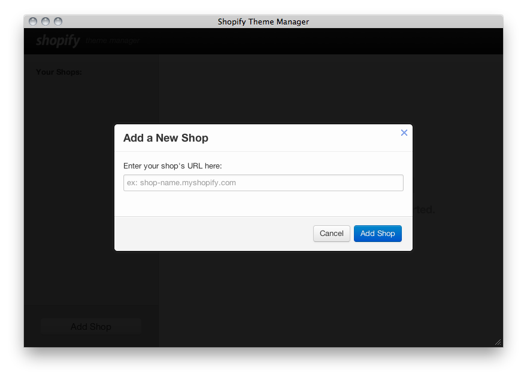
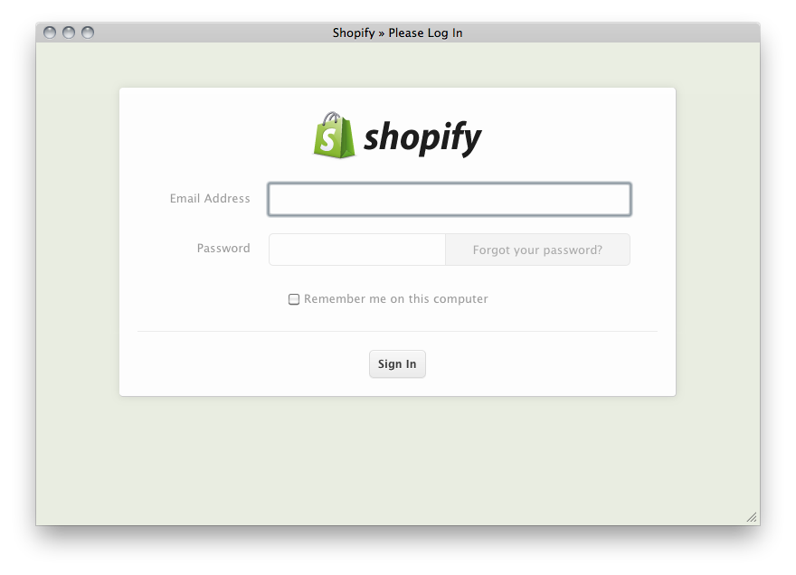
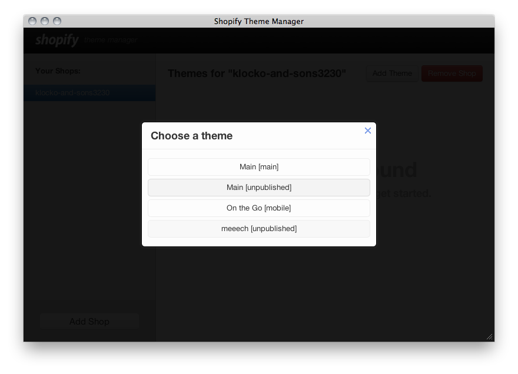
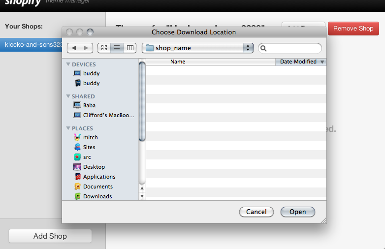
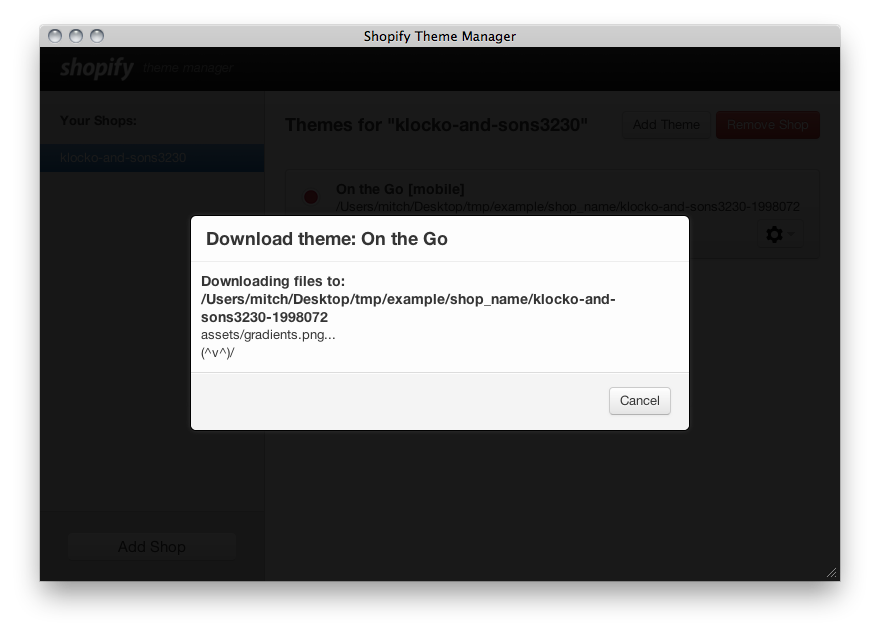
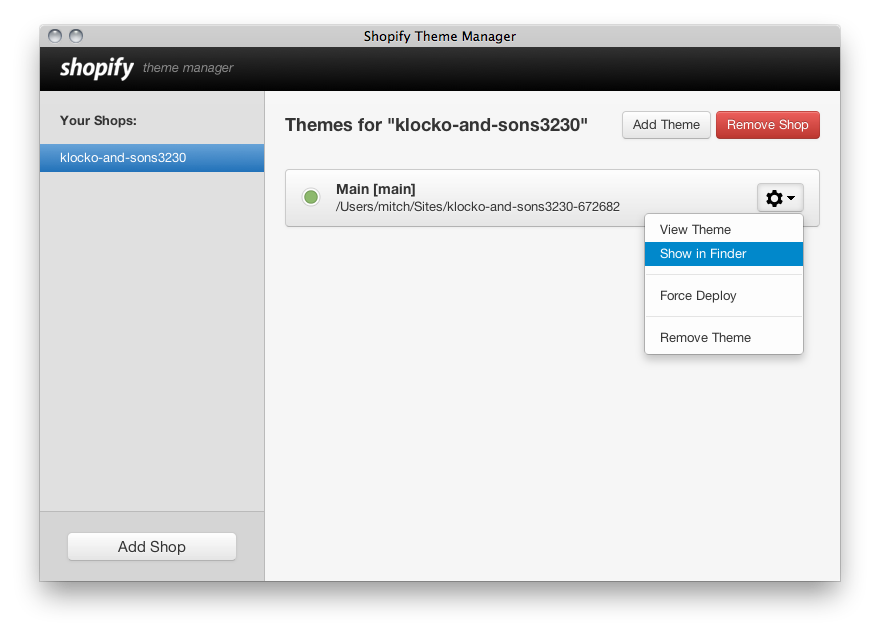
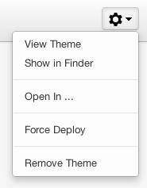

Shopify Theme App Help
Getting Started
When you first open the Application, you will right away be asked to add your shop.
Note: The Application needs your .myshopify.com store name, not any custom URL you may be using.

Next, you will be prompted to log into your shop.

After successfully logging in, the App will list out the themes associated with the shop. You can pick one to download.
You will then need to choose where to download the theme to. Pick a location and the theme will be downloaded into it's own folder there.

Once you've picked your folder, your chosen Theme will start downloading!
Now What?
You can work on the theme in your favourite editor, and when you save the changes will be uploaded.

The Details

View Theme Will open your shop in your browser. If the theme is unpublished, you will be taken to the preview.
Show in Finder Open the folder for this theme.
Open In ... Open theme with your favourite text editor. After the first time you choose an editor, we will remember your choice.
Force Deploy Will send all the theme files the full theme to shop.
Remove Theme Removes this theme from the app. We don't delete the folder.
All good! We're watching the folder.
 Means we're not watching the folder. If you continue to get this problem, please contact support.
Means we're not watching the folder. If you continue to get this problem, please contact support.
FAQ
I'm getting "[API] Invalid API key or access token (unrecognized login or wrong password)"? In this case, you'll want to Remove Shop, and re-add it.
How can I change my 'Open In X' Editor choice? Go to the Utility Menu, select Choose 'Open In' Editor. Known Editor apps that work: TextMate, TextMate 2, Sublime Text 2, Coda 2, BBEdit, TextWrangler.
Contact
Questions/Feedback? Shopify Support